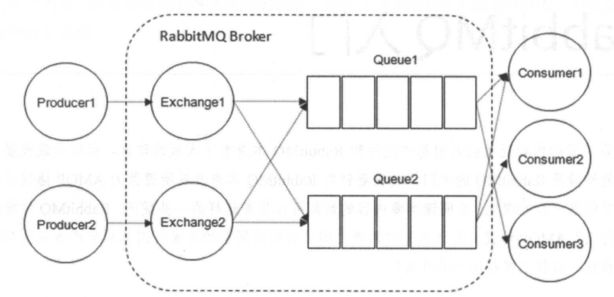
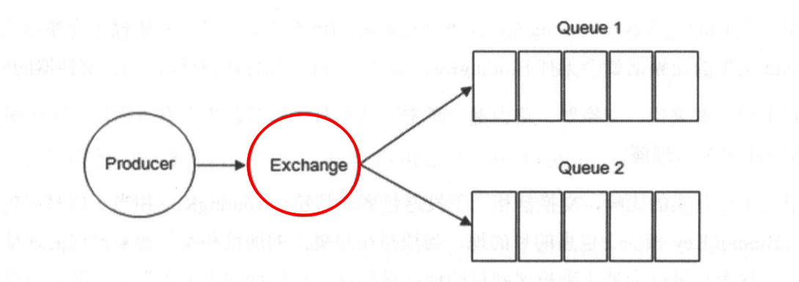
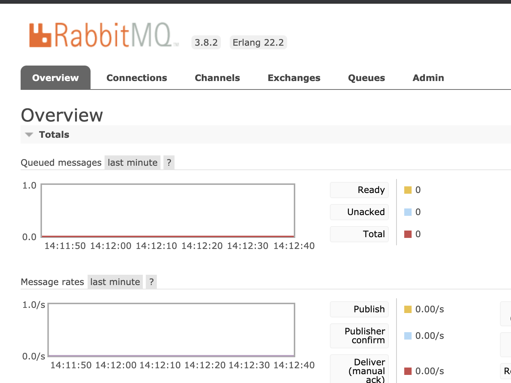
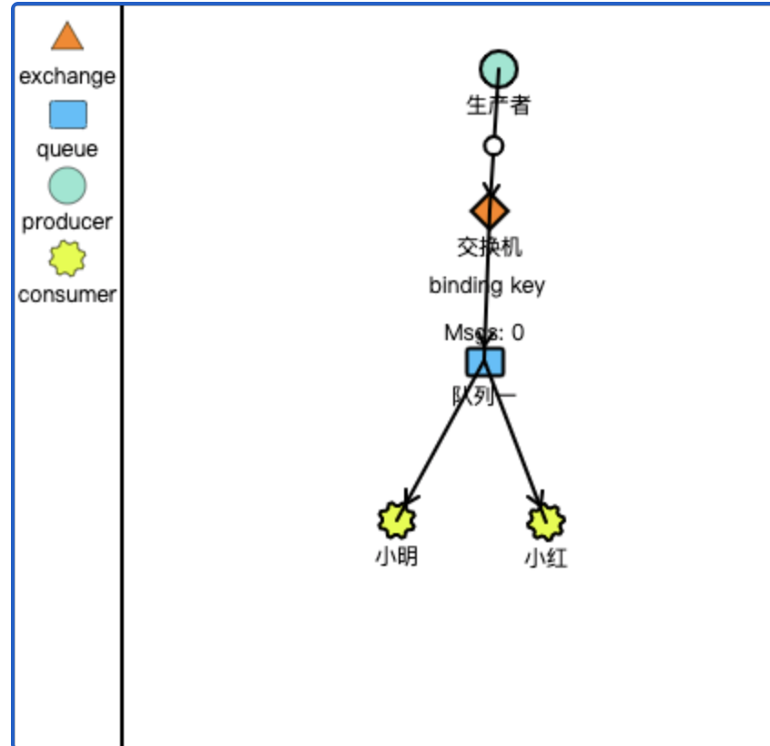
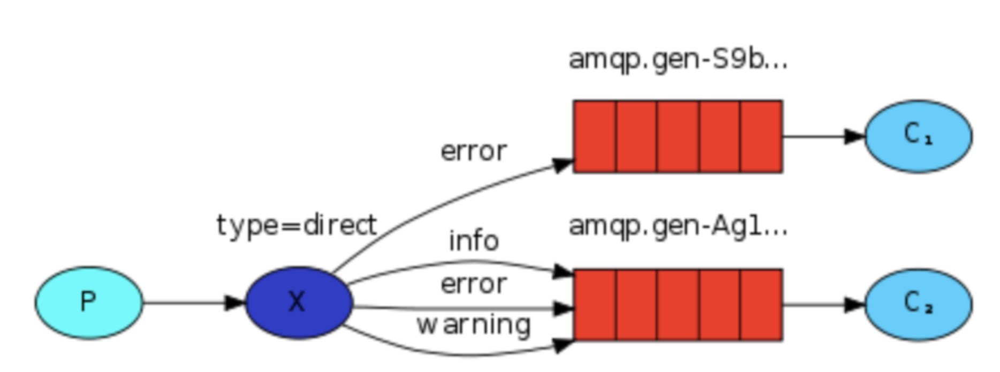
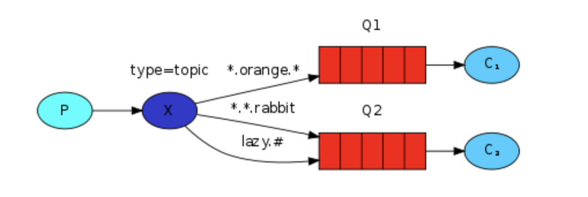

学不可以已。（《荀子·劝学》）
消息中间件
消息队列中间件（Message Queue Middleware， 简称为 MQ）是指利用高效可靠的消息传递机制进行与平台无关的数据交流， 并基于数据通信来进行分布式系统的集成。 通过提供消息传递和消息排队模型 ，它可以在分布式环境下扩展进程间的通信。一般有两种传递模式：点对 点 ( P2P, Point-to-Point ）模式和发布／订阅（ Pub/Sub ）模式
MQ的作用
1）解耦：在项目启动之初是很难预测未来会遇到什么困难的，消息中间件在处理过程中插入了一个隐含的，基于数据的接口层，两边都实现这个接口，这样就允许独立的修改或者扩展两边的处理过程，只要两边遵守相同的接口约束即可。
2）冗余（存储）：在某些情况下处理数据的过程中会失败，消息中间件允许把数据持久化知道他们完全被处理
扩展性：消息中间件解耦了应用的过程，所以提供消息入队和处理的效率是很容易的，只需要增加处理流程就可以了。
3）削峰：在访问量剧增的情况下，但是应用仍然需要发挥作用，但是这样的突发流量并不常见。而使用消息中间件采用队列的形式可以减少突发访问压力，不会因为突发的超时负荷要求而崩溃
4）可恢复性：当系统一部分组件失效时，不会影响到整个系统。消息中间件降低了进程间的耦合性，当一个处理消息的进程挂掉后，加入消息中间件的消息仍然可以在系统恢复后重新处理
5）顺序保证：在大多数场景下，处理数据的顺序也很重要，大部分消息中间件支持一定的顺序性
6）缓冲：消息中间件通过一个缓冲层来帮助任务最高效率的执行
7）异步通信：通过把把消息发送给消息中间件，消息中间件并不立即处。
RabbitMQ

概念
RabbitMQ 整体上是一个生产者与消费者模型， 主要负责接收、存储和转发消息。 可以把消 息传递的过程想象成： 当你将一个包裹送到邮局， 邮局会暂存并最终将邮件通过邮递员送到收 件人的手上， RabbitMQ 就好比由邮局、邮箱和邮递员组成的一个系统。 从计算机术语层面来说， RabbitMQ 模型更像是一种交换机模型。
Broker:它提供一种传输服务,它的角色就是维护一条从生产者到消费者的路线，保证数据能按照指定的方式进行传输,
Exchange：消息交换机,它指定消息按什么规则,路由到哪个队列。
Queue:消息的载体,每个消息都会被投到一个或多个队列。
Binding:绑定，它的作用就是把exchange和queue按照路由规则绑定起来.
Routing Key:路由关键字,exchange根据这个关键字进行消息投递。
vhost:虚拟主机,一个broker里可以有多个vhost，用作不同用户的权限分离。
Producer:消息生产者,就是投递消息的程序.
Consumer:消息消费者,就是接受消息的程序.
Channel:消息通道,在客户端的每个连接里,可建立多个channel.
|
Broker：消息中间件的服务节点
对于 RabbitMQ 来说， 一个 RabbitMQ Broker 可以简单地看作一个 RabbitMQ 服务节点， 或者 RabbitMQ 服务实例。 大多数情况下也可以将一个 RabbitMQ Broker 看作一 台 RabbitMQ 服务器 。

Exchange：交换机
生产者将消息发送到 Exchange ，由交换器将消息路由到一个或者多个队列中。

RoutingKey 与 Binding Key
生产者在将消息发送给Exchange的时候，一般会指定一个routing key，来指定这个消息的路由规则，生产者就可以在发送消息给Exchange时，通过指定routing key来决定消息流向哪里。
RabbitMQ常用的Exchange Type有三种：fanout、direct、topic。
- fanout:把所有发送到该Exchange的消息投递到所有与它绑定的队列中。
- direct:把消息投递到那些binding key与routing key完全匹配的队列中。
- topic:将消息路由到binding key与routing key模式匹配的队列中。
示例代码
由官方教程翻译而来，用ts实现，因为觉得ts好使
https://www.rabbitmq.com/tutorials
能搜索rabbitmq的一般都会了解一些概念，就直接上代码吧。
$ node -v
v8.9.3
# 为了执行ts代码
$ ts-node -v
v9.0.0
$ brew install rabbitmq
$ brew services start rabbitmq
|
访问 http://127.0.0.1:15672， 进入rabbitmq后台管理界面。

访问 http://tryrabbitmq.com/ 进入模拟 生产-交换机-队列-消费者

以上为准备阶段与可视化阶段
direct
以下代码主要实现生产者

import * as amqp from 'amqplib'
const url = `amqp://localhost`;
(async function publish(){
const exchange = 'direct_logs';
const msg = 'hello world';
const routingKeys = ['info', 'error', 'warning'];
const connect = await amqp.connect(url);
const channel = await connect.createChannel();
await channel.assertExchange(exchange, 'direct', { durable: false });
let i = 0;
while(i<1){
const index = random(3);
channel.publish(exchange, routingKeys[index], Buffer.from(msg));
console.log(`[x] Sent ${msg}-- ${routingKeys[index]}`);
i++;
}
await sleep(1);
await connect.close();
process.exit(0);
})();
function sleep(time: number) {
return new Promise((resolve) => setTimeout(resolve, time*1000));
}
function random(max: number){
return Math.floor(Math.random() * Math.floor(max));
}
|
import * as amqp from 'amqplib'
const url = `amqp://localhost`;
(async function receive(){
const connect = await amqp.connect(url);
const channel = await connect.createChannel();
const exchange = 'direct_logs';
await channel.assertExchange(exchange, 'direct', { durable: false });
const routingKeys = ['info', 'error', 'warning'];
const queueA = await channel.assertQueue('queueA');
await channel.bindQueue(queueA.queue, exchange, routingKeys[0]);
await channel.bindQueue(queueA.queue, exchange, routingKeys[1]);
await channel.bindQueue(queueA.queue, exchange, routingKeys[2]);
const queueB = await channel.assertQueue('queueB');
await channel.bindQueue(queueB.queue, exchange, routingKeys[1]);
channel.consume(queueA.queue, msg => {
console.log("队列AAAAA：", msg.content.toString())
}, { noAck: true });
channel.consume(queueB.queue, msg => {
console.log("队列BBBBBBBB：", msg.content.toString())
}, { noAck: true });
})();
|
$ ts-node emit_log_direct.ts
[x] Sent hello world-- error
[x] Sent hello world-- info
$ ts-node receive_logs_direct.ts
队列AAAAA： hello world
队列BBBBBBBB： hello world
队列AAAAA： hello world
|
topic
发送到主题交换机的消息 必须是单词列表，以.分割， routing_key无效。通常它们指定与消息相关的某些功能。 一些有效的路由关键示例：“stock.usd.nyse”，“ nyse.vmw”，“ quick.orange.rabbit”。 路由关键字中可以包含任意多个单词，最多255个字节。
* (star) : 匹配一个单词
# (hash) : 匹配 0 或 更多单词
|

import * as amqp from 'amqplib'
const url = `amqp://localhost`;
(async function publish(){
const exchange = 'topic_logs';
const msg = 'hello world';
const keys = ['quick.orange.rabbit', 'quick.orange.fox', 'lazy.brown.fox'];
const connect = await amqp.connect(url);
const channel = await connect.createChannel();
await channel.assertExchange(exchange, 'topic', { durable: false });
let i = 0;
while(i<1){
const index = random(3);
channel.publish(exchange, keys[index], Buffer.from(msg));
console.log(`[x] Sent ${msg}-- ${keys[index]}`);
i++;
}
await sleep(1);
await connect.close();
process.exit(0);
})();
function sleep(time: number) {
return new Promise((resolve) => setTimeout(resolve, time*1000));
}
function random(max: number){
return Math.floor(Math.random() * Math.floor(max));
}
|
import * as amqp from 'amqplib'
const url = `amqp://localhost`;
(async function receive(){
const connect = await amqp.connect(url);
const channel = await connect.createChannel();
const exchange = 'topic_logs';
await channel.assertExchange(exchange, 'topic', { durable: false });
const queueA = await channel.assertQueue('queue_topic_A');
await channel.bindQueue(queueA.queue, exchange, '*.orange.*');
const queueB = await channel.assertQueue('queue_topic_B');
await channel.bindQueue(queueB.queue, exchange, '#');
channel.consume(queueA.queue, msg => {
console.log("队列AAAAA：", msg.content.toString())
}, { noAck: true });
channel.consume(queueB.queue, msg => {
console.log("队列BBBBBBBB：", msg.content.toString())
}, { noAck: true });
})();
|
$ ts-node emit_log_topic.ts
[x] Sent hello world-- error
[x] Sent hello world-- info
$ ts-node receive_logs_topic.ts
队列AAAAA： hello world
队列BBBBBBBB： hello world
队列AAAAA： hello world
|
参考
rabbitmq官网教程